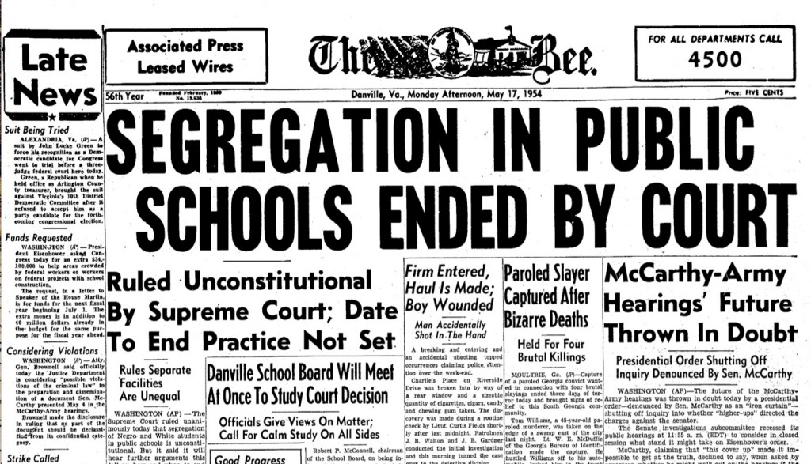

Brown v. Board of Education
Brown v. the Board of Education of Topeka, Kansas was the Supreme Court case that abolished racial segregation in public schools due to it violating the fourteenth amendment. It was considered a milestone for Civil Rights History as it helped boost other acts.
Date: May 17, 1954
Here are some similar court cases before "Brown v. Board of Education" that involved segregation in education.
The Plessy Decision was a court case with "Homer Plessy" and "John Ferguson". It mainly was about racial segregation in public accommodations and services. The Court Case started in 1892 when Home Plessy refused to give up his seat to a white man on a train (back then it was part of the law). He was then arrested, but then he said arresting him for this violated the 14th amendment, so he decided to fight his case in court. But, it was ruled 8-1 against Plessy, and helped strengthen the racial segregation.
Pearson v. Murray was a court case where Thurgood Marshall challenged the university (which I think may have affected many other universities) that rejected him solely on race. Donald Murray was also affected by this and Marshall used him as another example. He said that the university violated the "Seperate but equal" law since university is a site of higher education. The city court agreed and abolished the policy (basically removing the restriction of people of color in certain universities).
Sweat v. Painter was a court case in 1950 where the NAACP also helped to challenge racial discrimination in higher education. Very similar to the Murray case.
McLaurin v. Oklahoma Board of Regents of Higher Education was another court case in 1950, very similar to the two court cases above. It was more about discrimination inside of the school.
Brown v. Board of Education was actually 5 different court cases. These cases were Brown v. Board of Education of Topeka, Briggs v. Elliot, Davis v. Board of Education of Prince Edward County (VA.), Bolling v. Sharpe, and Gebhart v. Ethel. Each one was different, but all of the same topic in different states. They were talking about how it was separate but not equal, how it violates the fourteenth amendment, and how the segregated school systems make black children feel inferior to white children. Eventually, all of the justices agreed on how segregation in public schools is unconstitutional, but they were unsure how to implement the ruling. They knew that the southern states would most likely rebel. They decided to desegregate in an appropriate speed. Brown and Brown II (as the Courts plan for how to desegregate schools came to be called) were responsible for getting the process underway.
Brown v. Board of Education of Topeka was a Supreme Court case in 1954. It was about how racial segregation in public schools was unconstitutional, as it violated the fourteenth amendment by having separate but unequal public services (schools in this case). This all started when Linda Brown (Oliver Brown the plaintiff’s daughter) was denied entry to an all white school. Or, well, it also started before this, as the NAACP was trying to prevent any segregation in schools many years before.
Other Social Justice acts such as the Montgomery Bus Boycott (1955) was inspired by the Brown v Board of education case. Also, many sit-ins and demonstrations (that were mainly led by Martin Luther King Jr.) were also inspired. Another impact it had was in 1976, when the Supreme Court ruled in Runyon v. McCrary, that private schools having bias during admission was unconstitutional.
The final decision was to desegregate schools slowly, knowing that southern states would oppose against this decision. There is an example where an African American teenager was attempting to enter a white private school in 1957. Many violent protests had broken out due to this, and it took US troops to calm everything down in that sitution. Adding on, many southern states had found a way around this new law, as it doesn't apply to private schools. It is obvious that all of the Brown v. Board of Education court cases had a major effect on civil right acts and movements (it had even helped inspire desegregation in private schools later in the 1970s).